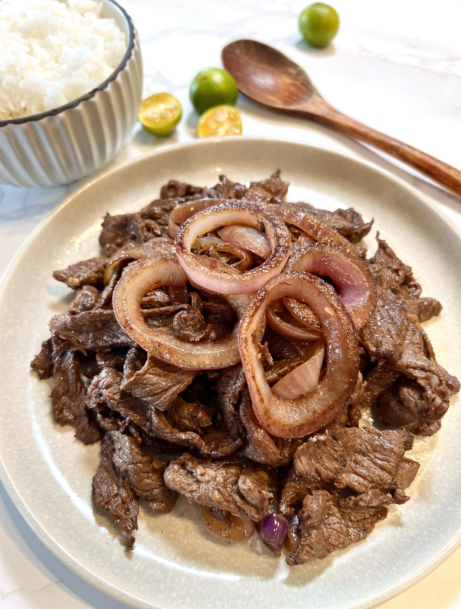

Bistek

Description
Bistek, short for "Bistec Encebollado," is a popular Filipino dish that features thinly sliced beef marinated and cooked with soy sauce, calamansi juice (or lemon juice), and onions. The name "bistek" is derived from the Spanish word "bistec," meaning beefsteak, indicating the dish's Spanish influence.
Ingredients
- Beef
- Soy sauce
- Calamansi juice or lemon juice
- Garlic
- Onion
- Black pepper
- Cooking oil
Steps
- Marinate the beef
- In a bowl, combine the thinly sliced beef with soy sauce, calamansi juice (or lemon juice), minced garlic, and black pepper. Make sure the beef is evenly coated with the marinade. Cover the bowl and let the beef marinate in the refrigerator for at least 30 minutes, or up to a few hours for more flavor.
- Saute the onions
- Heat a tablespoon of cooking oil in a large skillet or frying pan over medium heat. Add the thinly sliced onions and sauté them until they are soft and caramelized, about 5-7 minutes. Once the onions are done, transfer them to a plate and set aside.
- Cook the beef
- In the same skillet, add a bit more oil if needed. Remove the beef from the marinade, allowing any excess marinade to drip off, and reserve the marinade for later. Increase the heat to medium-high and add the beef slices to the skillet in a single layer. Cook the beef for about 2-3 minutes on each side until browned and cooked to your desired level of doneness. Be careful not to overcrowd the skillet, and cook the beef in batches if necessary.
- Make the sauce
- Once the beef is cooked, return all the beef slices to the skillet. Pour in the reserved marinade and bring it to a simmer. Let the sauce cook for a few minutes until it slightly thickens and coats the beef.
- Combine and serve
- Add the sautéed onions back to the skillet with the beef and sauce. Toss everything together until the onions are evenly distributed. Taste the sauce and adjust the seasoning if needed, adding more soy sauce, calamansi juice, or black pepper according to your preference.
- Serve
- Transfer the bistek to a serving platter or individual plates. Garnish with chopped green onions or parsley if desired. Bistek is traditionally served hot over steamed rice. Enjoy your flavorful Filipino dish!
Homepage